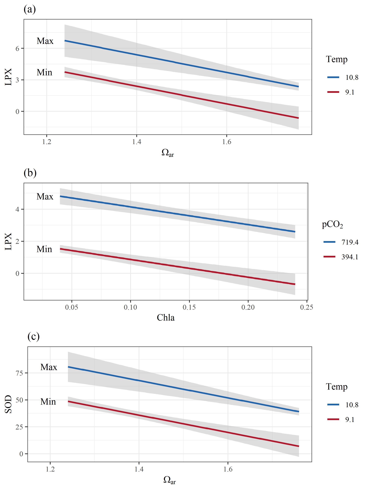

Pteropod stressor interaction: figures
library(tidyverse)
library(vegan)
library(ggord)
library(scales)
library(effects)
library(knitr)
library(gridExtra)
library(grid)
library(stargazer)
source("R/funcs.R")
opts_chunk$set(fig.align = 'center', message = F, echo = T, cache = F, dev = 'png', dev.args = list(family = 'serif'), dpi = 400, fig.pos = '!h', warning = F, background = 'white', out.width = '100%',
fig.process = function(x) {
x2 = sub('-\\d+([.][a-z]+)$', '\\1', x)
if (file.rename(x, x2)) x2 else x
})
data(envdat)
data(ptedat)
data(phymod)
data(biomod)
envchr <- c('Lat', 'pCO2', 'pH', 'Ara', 'O2', 'Temp', 'Fluor')
biochr <- c('CAT', 'GR', 'GSHonGSSG', 'GST', 'LPX', 'ORAC', 'SOD', 'ORACvLPX')
phychr <- c('abu', 'dis', 'len', 'ty2', 'ty3', 'scr')# biomarker rda model
dat_bio <- ptedat %>%
select(one_of('CTD', biochr)) %>%
na.omit %>%
inner_join(envdat, by = 'CTD') %>%
select(one_of(c('CTD', envchr, biochr))) %>%
data.frame %>%
remove_rownames %>%
column_to_rownames('CTD')
envphy <- select(dat_bio, one_of(envchr)) %>%
select(-Lat) %>%
rename(Chla = Fluor) %>%
decostand(method = 'range')
ptephy <- select(dat_bio, one_of(biochr)) %>%
decostand(method = 'range')
biorda<- rda(ptephy, envphy)
# physiology rda model
dat_phy <- ptedat %>%
select(one_of('CTD', phychr)) %>%
na.omit %>%
inner_join(envdat, by = 'CTD') %>%
select(one_of(c('CTD', envchr, phychr))) %>%
data.frame %>%
remove_rownames %>%
column_to_rownames('CTD') %>%
rename(
abundance = abu,
dissolution = dis,
length = len,
scarring = scr,
typeII = ty2,
typeIII = ty3
)
envphy <- select(dat_phy, one_of(envchr)) %>%
select(-Lat) %>%
rename(Chla = Fluor) %>%
decostand(method = 'range')
ptephy <- select(dat_phy, -one_of(envchr)) %>%
decostand(method = 'range')
phyrda <- rda(ptephy, envphy)# globals
coord_fix <- F
repel <- F
addsize <- 3
alpha <- 0.8
arrow <- 0.3
cols <- 'lightblue'
scalbio <- range(dat_bio$Lat)
scalbio <- seq(scalbio[1], scalbio[2], length = 5)
scalphy <- range(dat_phy$Lat)
scalphy <- seq(scalphy[1], scalphy[2], length = 5)
p1a <- ggord(biorda, ptslab = T, parse = T, repel = repel, coord_fix = coord_fix, addsize = addsize, size = dat_bio$Lat, sizelab = 'Latitude', alpha = alpha, arrow = arrow, ellipse = F) +
ggtitle('(a) Cellular endpoints') +
scale_size(breaks = scalbio, labels = round(scalbio, 1), range = c(1, 8))
p2a <- ggord(phyrda, ptslab = T, parse = T, repel = repel, coord_fix = coord_fix, addsize = addsize, size = dat_phy$Lat, sizelab = 'Latitude', alpha = alpha, arrow = arrow, ellipse = F) +
ggtitle('(b) Physiological endpoints') +
scale_size(breaks = scalphy, labels = round(scalphy, 1), range = c(1, 8))
grid.arrange(p1a, p2a, ncol = 2)
Fig. 4 Results of redundancy analyses for environmental variables with (a) cellular and (b) physiological endpoints of pteropod response to OA stressors. Points are site locations in multivariate space with the size proportional to latitude. Separate RDAs were created for cellular and physiological endpoints because not all data were available across all stations.
# physiology rda model
dat_cor <- ptedat %>%
select(one_of('CTD', phychr, biochr)) %>%
# na.omit %>%
left_join(envdat, by = 'CTD') %>%
data.frame %>%
remove_rownames %>%
column_to_rownames('CTD')
# all correlations
crs <- crossing(var1 = names(dat_cor), var2 = names(dat_cor)) %>%
filter(var1 != var2) %>%
rownames_to_column() %>%
group_by(rowname) %>%
nest %>%
mutate(
crs = map(data, function(x){
# variables
vr1 <- dat_cor[[x$var1]]
vr2 <- dat_cor[[x$var2]]
# pearson
pr_ts <- cor.test(vr1, vr2, method = 'pearson')
pr_cr <- round(pr_ts$estimate, 2)
pr_pv <- p_ast(pr_ts$p.value)
pr <- paste(pr_cr, pr_pv)
out <- data.frame(pr = pr, stringsAsFactors = F)
return(out)
})
) %>%
unnest %>%
select(-rowname)levs <- c(sort(envchr), sort(biochr), sort(phychr))
labs <- c('Omega[ar]', 'Chla', 'Lat', 'O[2]', 'pCO[2]', 'pH', 'Temp', 'CAT', 'GR', 'GSHonGSSG', 'GST', ' LPX', 'ORAC', 'ORACvLPX', 'SOD', 'abundance', 'dissolution', 'length', 'scarring', 'typeII', 'typeIII')
prplo <- crs %>%
separate(pr, c('cor', 'sig'), sep = ' ') %>%
filter(var1 %in% levs & var2 %in% levs) %>%
mutate(
cor = as.numeric(cor),
var1 = factor(var1, levels = rev(levs), labels = rev(labs)),
var2 = factor(var2, levels = rev(levs), labels = rev(labs)),
sig = gsub('ns', '', sig)
)
pbase <- theme(
panel.grid.major = element_blank(),
panel.grid.minor = element_blank(),
axis.text.x = element_text(angle = 45, hjust = 1, vjust = 1, size = 8),
axis.text.y = element_text(size = 8),
legend.position = c(0.5, 1.12),
legend.direction = 'horizontal',
plot.margin = unit(c(4,4,0,0), "lines"),
strip.background = element_blank(),
strip.text.y = element_text(angle = 0, hjust = 0, vjust = 0.5),
panel.background = element_rect(fill = 'black')
)
outlab <- data.frame(
y = c(3.5, 10.5, 18.5),
lab = c('Population/\nPhysiology', 'Cellular', 'Environment')
)
p <- ggplot(prplo) +
geom_tile(aes(y = var1, x = var2, fill = cor), colour = 'black') +
geom_text(aes(y = var1, x = var2, label = sig)) +
annotation_custom(grob = textGrob(label = outlab$lab[1], hjust = 0, gp = gpar(cex = 0.7)),
ymin = outlab$y[1], ymax = outlab$y[1], xmin = 22, xmax = 22) +
annotation_custom(grob = textGrob(label = outlab$lab[2], hjust = 0, gp = gpar(cex = 0.7)),
ymin = outlab$y[2], ymax = outlab$y[2], xmin = 22, xmax = 22) +
annotation_custom(grob = textGrob(label = outlab$lab[3], hjust = 0, gp = gpar(cex = 0.7)),
ymin = outlab$y[3], ymax = outlab$y[3], xmin = 22, xmax = 22) +
annotation_custom(grob = textGrob(label = outlab$lab[1], hjust = 0.5, gp = gpar(cex = 0.7)),
xmin = outlab$y[1], xmax = outlab$y[1], ymin = 22.5, ymax = 22.5) +
annotation_custom(grob = textGrob(label = outlab$lab[2], hjust = 0.5, gp = gpar(cex = 0.7)),
xmin = outlab$y[2], xmax = outlab$y[2], ymin = 22.5, ymax = 22.5) +
annotation_custom(grob = textGrob(label = outlab$lab[3], hjust = 0.5, gp = gpar(cex = 0.7)),
xmin = outlab$y[3], xmax = outlab$y[3], ymin = 22.5, ymax = 22.5) +
pbase +
scale_y_discrete('', expand = c(0, 0), labels = parse(text = rev(labs))) +
scale_x_discrete('', expand = c(0, 0), labels = parse(text = rev(labs))) +
scale_fill_gradient2('Correlation', low = muted("blue"), mid = "white", high = muted("red"), midpoint = 0) +
guides(fill = guide_colourbar(barheight = 0.5, barwidth = 5, label.theme = element_text(size = 6, angle = 0))) +
geom_hline(yintercept = 6.5, size = 1.5) +
geom_hline(yintercept = 14.5, size = 1.5) +
geom_vline(xintercept = 6.5, size = 1.5) +
geom_vline(xintercept = 14.5, size = 1.5)
# Code to override clipping
gt <- ggplot_gtable(ggplot_build(p))
gt$layout$clip[gt$layout$name == "panel"] <- "off"
grid.draw(gt) Fig. 5 Correlation matrix of environmental variables, cellular response endpoints, and population (abundance) and physiological response endpoints for pteropods. Darker red values are strong positive correlations and darker purple values are strong negative correlations. Significance values at alpha = 0.05 are shown by stars (p < 0.05 *, p < 0.005 **).
Fig. 5 Correlation matrix of environmental variables, cellular response endpoints, and population (abundance) and physiological response endpoints for pteropods. Darker red values are strong positive correlations and darker purple values are strong negative correlations. Significance values at alpha = 0.05 are shown by stars (p < 0.05 *, p < 0.005 **).
toplo <- biomod %>%
filter(Model %in% c('mod2', 'mod3', 'mod23')) %>%
mutate(
cvar = c('pCO2', 'Temp', 'Temp'),
xvar = c('Fluorescence', 'Omega[ar]', 'Omega[ar]'),
yvar = c('LPX', 'LPX', 'SOD'),
legr = c('pCO[2]', 'Temp', 'Temp'),
fct = c(0.5, 0.95, 0.95)
) %>%
mutate(
pldat = pmap(list(Modobj, cvar, fct), function(Modobj, cvar, fct){
get_pldat(Modobj, cvar, fct = fct)
}),
plos = pmap(list(pldat, xvar, cvar, legr), function(pldat, xvar, cvar, legr){
pl1 <- pldat[[1]]
pl2 <- pldat[[2]]
# leg vals as factor
pl1[[cvar]] <- factor(pl1[[cvar]],
levels = sort(unique(pl1[[cvar]]), decreasing = T),
labels = round(sort(unique(pl1[[cvar]]), decreasing = T), 1)
)
# colors
cols <- RColorBrewer::brewer.pal(9, 'RdBu')
# names for aes_string
nms <- names(pl1)
p1 <- ggplot() +
geom_ribbon(data = pl1, aes_string(x = nms[3], ymin = 'lo', ymax = 'hi', group = nms[4]), alpha = 0.5, fill = 'grey') +
geom_line(data = pl1, aes_string(x = nms[3], y = nms[1], group = nms[4], colour = nms[4]), size = 1) +
geom_text(data = pl2, aes(x= x, y = y, label = lab), hjust = 0) +
theme_bw() +
xlab(parse(text = xvar)) +
scale_colour_manual(parse(text = legr), values = c(rev(cols)[1], cols[1])) +
scale_y_continuous(nms[1])
return(p1)
})
)
p1 <- toplo$plos[[1]] + ggtitle('(b)') + xlab('Chla')
p2 <- toplo$plos[[2]] + ggtitle('(a)')
p3 <- toplo$plos[[3]] + ggtitle('(c)')
pA <- ggplot_gtable(ggplot_build(p1))
pB <- ggplot_gtable(ggplot_build(p2))
pC <- ggplot_gtable(ggplot_build(p3))
maxWidth = grid::unit.pmax(pA$widths[2:3], pB$widths[2:3], pC$widths[2:3])
pA$widths[2:3] <- maxWidth
pB$widths[2:3] <- maxWidth
pC$widths[2:3] <- maxWidth
grid.arrange(
pB, pA, pC, ncol = 1
) Fig. 6 Examples of model interactions of co-occuring environmental variables on pteropod cellular responses. Plot (a) shows a negative additive effect between aragonite saturation state (Ωar) and temperature on cellular toxicity (lipid peroxidation; LPX); plot (b) shows negative additive effects of food availability and pCO2 on LPX; plot (c) shows positive additive effects of temperature and Ωar on antioxidative activity (sodium dismutase, SOD). Both y-axes are transformed to conform to model output. Covarying environmental variables were held constant at the minimum and maximum values in the observed data.
toplo <- rbind(
phymod[phymod$Model == 'mod8', ],
phymod[phymod$Model == 'mod10', ],
phymod[phymod$Model == 'mod2', ]
) %>%
mutate(
cvar = c('Temp', 'O2', 'Temp'),
xvar = c('Omega[ar]', 'Temp','Omega[ar]'),
yvar = c('Dissolution', 'Dissolution', 'Abundance'),
legr = c('Temp', 'O[2]','Temp'),
pos = c('right', 'left','left'),
fct = c(1.04, 0.97, 0.92),
hjs = c(1, 0, 0)
) %>%
mutate(
pldat = pmap(list(Modobj, cvar, pos, fct), function(Modobj, cvar, pos, fct){
get_pldat(Modobj, cvar, pos = pos, fct = fct)
}),
plos = pmap(list(pldat, xvar, yvar, cvar, legr, hjs), function(pldat, xvar, yvar, cvar, legr, hjs){
pl1 <- pldat[[1]]
pl2 <- pldat[[2]]
# leg vals as factor
pl1[[cvar]] <- factor(pl1[[cvar]],
levels = sort(unique(pl1[[cvar]]), decreasing = T),
labels = round(sort(unique(pl1[[cvar]]), decreasing = T), 1)
)
# colors
cols <- RColorBrewer::brewer.pal(9, 'RdBu')
# names for aes_string
nms <- names(pl1)
p1 <- ggplot() +
geom_ribbon(data = pl1, aes_string(x = nms[3], ymin = 'lo', ymax = 'hi', group = nms[4]), alpha = 0.5, fill = 'grey') +
geom_line(data = pl1, aes_string(x = nms[3], y = nms[1], group = nms[4], colour = nms[4]), size = 1) +
geom_text(data = pl2, aes(x= x, y = y, label = lab), hjust = hjs) +
theme_bw() +
xlab(parse(text = xvar)) +
scale_colour_manual(parse(text = legr), values = c(rev(cols)[1], cols[1])) +
scale_y_continuous(yvar)
return(p1)
})
)
p1 <- toplo$plos[[1]] + ggtitle('(a)')
p2 <- toplo$plos[[2]] + ggtitle('(b)')
p3 <- toplo$plos[[3]] + ggtitle('(c)')
pA <- ggplot_gtable(ggplot_build(p1))
pB <- ggplot_gtable(ggplot_build(p2))
pC <- ggplot_gtable(ggplot_build(p3))
maxWidth = grid::unit.pmax(pA$widths[2:3], pB$widths[2:3], pC$widths[2:3])
pA$widths[2:3] <- maxWidth
pB$widths[2:3] <- maxWidth
pC$widths[2:3] <- maxWidth
grid.arrange(
pA, pB, pC, ncol = 1
) Fig. 7 Examples of model interactions and additive effects of co-occurring environmental variables with biomineralization (shell dissolution) and population (abundance) responses. Co-occurring effects between aragonite saturation state (Ωar) and temperature on shell dissolution are shown in (a), temperature and O2 on dissolution in (b), and temperature and aragonite saturation state on abundance in (c). All y-axes are transformed to conform to model output. Covarying environmental variables were held constant at the minimum and maximum values in the observed data.
Fig. 7 Examples of model interactions and additive effects of co-occurring environmental variables with biomineralization (shell dissolution) and population (abundance) responses. Co-occurring effects between aragonite saturation state (Ωar) and temperature on shell dissolution are shown in (a), temperature and O2 on dissolution in (b), and temperature and aragonite saturation state on abundance in (c). All y-axes are transformed to conform to model output. Covarying environmental variables were held constant at the minimum and maximum values in the observed data.
biotab <- biomod %>%
unnest(data) %>%
group_by(Model) %>%
mutate(n = n()) %>%
filter(n > 1) %>%
dplyr::select(-n)
biotab <- filter(biomod, Model %in% unique(biotab$Model))
cap <- 'Table 1: Model results for pteropod cellular response to pairs of co-occurring environmental variables. The estimated joint effects of variables and their significance in each model are shown. Parameter estimates are included with overall model statistics (R-squared, F statistic) at the bottom. Models with the same cellular response measure can be identified with the column names at the top. * p < 0.05, ** p < 0.01'
stargazer(biotab$Modobj, type = 'html', title = cap, digits = 2, keep.stat = c('adj.rsq'), intercept.top = T, intercept.bottom = F, dep.var.caption = 'Cellular response measures', report = 'vc*', star.char = c("", "*", "**"), omit = 'Constant')| Cellular response measures | |||||||||||||
| LPX | ORACvLPX | SOD | |||||||||||
| (1) | (2) | (3) | (4) | (5) | (6) | (7) | (8) | (9) | (10) | (11) | (12) | (13) | |
| Fluor | -11.07** | -7.64* | -9.73* | 320.02** | 256.12* | 226.61** | 287.36** | ||||||
| pCO2 | 0.01** | -0.27** | 0.10** | ||||||||||
| Ara | -8.43* | 227.87** | 132.98** | -80.21** | |||||||||
| Temp | 1.82 | -50.51* | 11.24 | 19.58* | 9.39 | 12.28* | |||||||
| O2 | -0.03** | 0.91** | -0.35** | ||||||||||
| pH | -15.27** | 418.53** | -169.62** | ||||||||||
| Adjusted R2 | 0.72 | 0.50 | 0.74 | 0.65 | 0.87 | 0.58 | 0.61 | 0.88 | 0.82 | 0.54 | 0.50 | 0.61 | 0.55 |
| Note: | p<0.1; p<0.05; p<0.01 | ||||||||||||
phytab <- phymod %>%
unnest(data) %>%
group_by(Model) %>%
mutate(n = n()) %>%
filter(n > 1) %>%
dplyr::select(-n)
phytab <- filter(phymod, Model %in% unique(phytab$Model))
cap <- 'Table 2: Model results for physiological and abundance responses to pairs of co-occurring environmental variables. The estimated joint effects of variables and their significance in each model are shown. Parameter estimates are included with overall model statistics (R-squared, F statistic) at the bottom. Models with the same response measure can be identified with the column names at the top. * p < 0.05, ** p < 0.01'
stargazer(phytab$Modobj, type = 'html', title = cap, digits = 2, keep.stat = c('adj.rsq'), intercept.top = T, intercept.bottom = F, dep.var.caption = 'Physiological response measures', dep.var.labels = c('Abundance', 'Shell dissolution'), report = 'vc*', star.char = c("", "*", "**"), omit = 'Constant')| Physiological response measures | ||||||||
| Abundance | Shell dissolution | |||||||
| (1) | (2) | (3) | (4) | (5) | (6) | (7) | (8) | |
| Fluor | -0.33* | |||||||
| pCO2 | -0.002** | 0.0004** | ||||||
| Ara | 1.45** | -1.27** | ||||||
| O2 | 0.01** | -0.01** | ||||||
| pH | 3.12** | -0.83** | ||||||
| Temp | -0.31** | -0.44** | -0.30** | -0.32** | -0.11 | -0.15 | 0.05* | |
| Ara:Temp | 0.10* | |||||||
| O2:Temp | 0.001* | |||||||
| Adjusted R2 | 0.40 | 0.51 | 0.43 | 0.45 | 0.71 | 0.87 | 0.87 | 0.69 |
| Note: | p<0.1; p<0.05; p<0.01 | |||||||